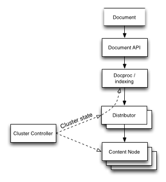
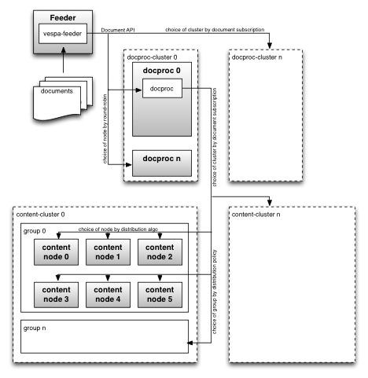
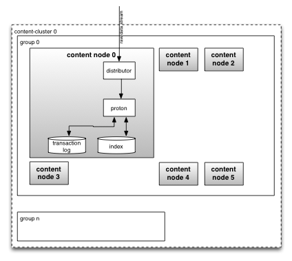
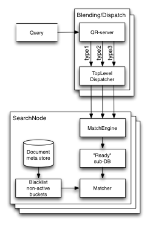

Vespa allows application instances to grow (and shrink) while serving queries and accepting writes. To maintain a uniform data distribution, documents are automatically redistributed in the background, using minimal data movement. Change the configured nodes and redeploy the application - no restarts needed.
The elasticity mechanism is also used to recover from a node loss - new replicas of documents are auto-created to maintain redundancy. Failed nodes is hence not a problem that requires immediate attention - as long as the instance has sufficient capacity to handle the data and load, it self-heals from node failures.
This article covers:
The document distribution system in Vespa consists of two main components: distributors and content nodes. Documents are accessed through a distributor. To handle a large number of documents, Vespa groups them in buckets, using hashing or hints in the document id.
The content nodes provide a Service Provider Interface (SPI) that abstracts how documents are stored in the elastic system. The SPI is the link between the elastic bucket management system and the storage. The SPI is implemented by proton - proton and content node is used interchangeably in this documentation.
A document Put or Update is sent to all replicas of the bucket keeping the document. If bucket replicas are out of sync, a bucket merge operation is run to re-sync the bucket. A bucket contains tombstones of recently removed documents. Read more about document expiry and batch removes in document expiry.
Buckets are split when they grow too large, and joined when they shrink. This is a key feature for high performance in very small to very large instances, and eliminates need for downtime or manual operations when scaling.
Documents enter Vespa using the Document API, using vespa-feeder, Document API, the Vespa Feeding Client API or Java Document API (all binaries use the Java Document API). If no route is set, clients feed to the default route. Next is document processing (round-robin) where documents are prepared for indexing, before entering the distributor. The distributor maps the document to bucket, and sends it to content nodes:

| Document processing | The document processing chain is a chain of processors that manipulate documents before they are stored. Document processors can be user defined. When using indexed search, the final step in the chain prepares documents for indexing. The Document API forwards requests to distributors. It calculates the correct distributor using the distribution algorithm and the cluster state. With no known cluster state, the client library will send requests to a random node, which replies with the updated cluster state if the node was incorrect. Cluster states are versioned, such that clients hitting outdated distributors do not override updated states with old states. |
|---|---|
| Distributor | The distributor keeps track of which content nodes that stores replicas of each bucket, based on the redundancy and information from the cluster controller. A bucket maps to one distributor only. A distributor keeps a bucket database with bucket metadata. The metadata holds which content nodes store replicas of the buckets, the checksum of the bucket content and the number of documents and meta entries within the bucket. Each document is algorithmically mapped to a bucket and forwarded to the correct content nodes. Read more. |
| Cluster controller | The cluster controller manages the state of the distributor and content nodes. This cluster state is used by the document processing chains to know which distributor to send documents to, as well as by the distributor to know which content nodes should have which bucket. Read more. |
| Content node | The content node has a bucket management system, which sends requests to a set of document databases, which each consists of three sub-databases. In short, this node activates and deactivates buckets for search. Refer to proton for details. |
Other aspects of feeding:
| Redundancy |
Redundancy configures how many content nodes stores replicas of the same bucket. No node may store more than one replica of a bucket. The distributors detect whether there are enough bucket replicas on the content nodes and add/remove as needed. Write operations wait for replies from every replica and fail if less than redundancy are persisted within timeout. Replica placement is found in document distribution. Searchable-copies configures how many replicas to keep in the Ready sub-database. |
|---|---|
| Consistency |
Consistency is maintained at bucket level. Content nodes calculate checksums based on the bucket contents, and the distributors compare checksums among the bucket replicas. A bucket merge is issued to resolve inconsistency, when detected. While there are inconsistent bucket replicas, the distributors route operations to the "best" replica. As buckets are split and joined, it is possible for replicas of a bucket to be split at different levels. A node may have been down while its buckets have been split or joined. This is called inconsistent bucket splitting. Bucket checksums can not be compared across buckets with different split levels. Consequently, distributors do not know whether all documents exist in enough replicas in this state. Due to this, inconsistent splitting is one of the highest maintenance priorities. After all buckets are split or joined back to the same level, the distributors can verify that all the replicas are consistent and fix any detected issues with a merge. Read more. |
Detailed process overview:

Content node expanded:

Retrieving documents is done by specifying an id to get, or use a selection expression to visit a range of documents - refer to the Document API. Overview:

| Get | When the content node receives a get request, it scans through all the document databases, and for each one it checks all three sub-databases. Once the document is found, the scan is stopped and the document returned. If the document is found in a Ready sub-database, the document retriever will apply any changes that is stored in the attributes before returning the document. |
|---|---|
| Visit | A visit request creates an iterator over each candidate bucket. This iterator will retrieve matching documents from all sub-databases of all document databases. As for get, attributes values are applied to document fields in the Ready sub-database. |
Indexed search has a separate pathway through the system. It does not use the distributor, nor has it anything to do with the SPI. It is orthogonal to the elasticity set up by the storage and retrieval described above. How queries move through the system:
A query enters the system through the QR-server (query rewrite server) in the Vespa Container. The QR-server issues one query per document type to the top level dispatcher, which in turn keeps track of all search nodes and relays queries to them:
| Container | The Container knows all the document types and rewrites queries as a collection of queries, one for each type. Queries may have a restrict parameter, in which case the container will send the query only to the specified document types. |
|---|---|
| Top level dispatcher | The top level dispatcher is a small process by default running on each container node, which is responsible for sending the query to each content node and collecting partial results. It pings all content nodes every second to know whether they are alive, and keeps open TCP connections to each one. If a node goes down, the elastic system will make the documents available on other nodes. |
| Content node matching | The match engine receives queries and routes them to the right document database based on the document type. The query is passed to the Ready sub-database, where the searchable documents are. Based on information stored in the document meta store, the query is augmented with a blacklist that ensures only active documents are matched. |
Resizing is orchestrated by the distributor, and happens gradually in the background. It uses a variation of the RUSH algorithms to distribute documents. Under normal circumstances, it makes a minimal number of documents move when nodes are added or removed.
Modify the configuration to add/remove nodes, then deploy. Add an elastic content cluster to the application by adding a content element in services.xml.
Central to the ideal state distribution algorithm is the assignment of a node sequence to each bucket. The illustration shows how each bucket uses a pseudo-random sequence of numbers to derive the node sequence. The pseudo-random generator is seeded with the bucket id, so each bucket will always get the same sequence:

Each node is assigned a distribution-key, which is an index in the number sequence. The set of number/index pairs is sorted on descending numbers, and this new sequence of indexes determines which nodes the replicas are placed on, with the first node being host to the primary replica, i.e. the active replica. This specification of where to place a bucket is called the bucket's ideal state.
When adding a new node, new ideal states are calculated for all buckets. The buckets that should have a replica on the new node are moved, while the superfluous are removed. Redistribution example - add a new node to the system, with redundancy 2:

The distribution algorithm generates a random node sequence for each bucket. In this example with redundancy of two, the two nodes sorted first will store replicas of the data. The figure shows how random placement onto two nodes changes as a third node is introduced. The new node introduced takes over as primary for the buckets where it got sorted first in order, and as secondary for the buckets where it got sorted second. This ensures minimal data movement when nodes come or go, and allows capacity to be changed easily.
No buckets are moved between the existing nodes when a new node is added. Based on the pseudo-random sequences, some buckets change from primary to secondary, or are removed. Many nodes can be added in the same deployment. Adding more than one minimizes the total bucket redistribution, but increases the time to get to the ideal state. Procedure:
Whether a node fails or is deliberately removed, the same redistribution happens. If the remove is planned, the node remains up until it has been drained. Example of redistribution after node failure, redundancy 2:

In the figure, node 2 fails. This node held the active replicas of bucket 2 and 6. Once the node fails the secondary replicas are set active. If they were already in a ready state, they can start serving queries immediately. Otherwise they will have to index their data. All buckets that no longer have secondary replicas are merged to the remaining nodes according to their pseudo-random sequence. It is important that the nodes retain their original index; otherwise the buckets would all have to move to regain their ideal states.
Do not remove more than redundancy-1 nodes at a time. Observe idealstate.merge_bucket.pending to know bucket replica status, when zero on all distributor nodes, it is safe to remove more nodes. If hierarchical distribution is used to control bucket replicas, remove all nodes in a group if the redundancy settings ensure replicas in each group.
To increase bucket redundancy level before taking nodes out, retire nodes. Again, track idealstate.merge_bucket.pending to know when done. Use the State API or vespa-set-node-state to set a node to retired. The cluster controller's status page lists node states.
To merge two content clusters, add nodes to the cluster like add node above, considering:
An alternative to increasing cluster size is building a new cluster, then migrate documents to it. This is supported using visiting.
| Availability vs resources | Keeping index structures costs resources. Not all replicas of buckets are necessarily searchable, unless configured using searchable-copies. As Vespa indexes buckets on-demand, the most cost-efficient setting is 1, if one can tolerate temporary coverage loss during node failures. Note that searchable-copies does not apply to streaming search as this does not use index structures. Distributing buckets using a hierarchy helps implement policies for availability and query performance. |
|---|---|
| Data retention vs size | When a document is removed, the document data is not immediately purged. Instead, proton keeps remove-entries (tombstones of removed documents) for a configurable amount of time. The default is two weeks, refer to pruneremoveddocumentsage. This ensures that removed documents stay removed in a distributed system where nodes change state. Entries are removed periodically after expiry. Hence, if a node comes back up after being down for more than two weeks, removed documents are available again, unless the data on the node is wiped first. A larger pruneremoveddocumentsage will hence grow the storage size as this keeps document and tombstones longer. Note: The backend does not store remove-entries for nonexistent documents. This to prevent clients sending wrong document identifiers from filling a cluster with invalid remove-entries. A side-effect is that if a problem has caused all replicas of a bucket to be unavailable, documents in this bucket cannot be marked removed until at least one replica is available again. Documents are written in new bucket replicas while the others are down - if these are removed, then older versions of these will not re-emerge, as the most recent change wins. |
| Transition time | See transition-time for tradeoffs for how quickly nodes are set down vs. system stability. |
| Removing unstable nodes | One can configure how many times a node is allowed to crash before it will automatically be removed. The crash count is reset if the node has been up or down continuously for more than the stable state period. If the crash count exceeds max premature crashes, the node will be disabled. Refer to troubleshooting. |
| Minimal amount of nodes required to be available |
A cluster is typically sized to handle a given load.
A given percentage of the cluster resources are required for normal operations,
and the remainder is the available resources that can be used if some of the nodes are no longer usable.
If the cluster loses enough nodes, it will be overloaded:
|